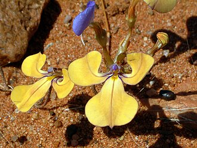

Lobelia

Lobelia is a genus of flowering plants in the family Campanulaceae comprising 415 species, with a subcosmopolitan distribution primarily in tropical to warm temperate regions of the world, a few species extending into cooler temperate regions. They are known generally as lobelias. The genus Lobelia comprises a substantial number of large and small annual, perennial and shrubby species, hardy and tender, from a variety of habitats, in a range of colours. Many species appear totally dissimilar from each other. However, all have simple, alternate leaves and two-lipped tubular flowers, each with five lobes. The upper two lobes may be erect while the lower three lobes may be fanned out. Flowering is often abundant and the flower colour intense, hence their popularity as ornamental garden subjects. Several species are cultivated as ornamental plants in gardens. These include Lobelia cardinalis syn. Lobelia fulgens (cardinal flower or Indian pink), Lobelia siphilitica (blue lobelia), and Lobelia erinus, which is used for edging and window boxes.
Read more...
Types
Lobelia is an astonishingly diverse genus of herbaceous flowering plants, with between 420-440 species and many more cultivars.
These include annuals, biennials, tender perennials, and hardy perennials, and their habits are just as diverse and include upright, bushy, clump-forming and trailing.
As for the flowers, they occur in solitary form, in panicles, or in racemes.
It is hardly possible to do justice in one article to the varieties of a genus that is both as large and as varied as lobelia.
Below we list a few essential species and outline some popular cultivars:
- L. x speciosa
A popular group of lobelia varieties commonly grown in the UK is a group of hybrids derived from L. cardinalis and L. siphilitica. L. x speciosa are perennial plants but are also often grown as annuals in UK gardens, as most are only borderline hardy and will only typically make it through the winter in milder regions. These are often grown as summer bedding plants and are also commonly grown in containers.
- L. cardinalis
The cardinal flower is a species that is both very hardy and also heat tolerant. It is a very tall species with an upright habit and bears big flowers on spikes that are a deep, intense reddy-purple hue, producing blooms well into autumn. Though not native to the UK, and usually fairly short-lived, it can be planted anywhere where soil remains reliably moist or boggy all year round. “Give your garden an exotic feel by planting Lobelia cardinalis ‘Queen Victoria’,” says Master Horticulturist Dan Ori. “I love the black-purple leaves crowned with vibrant red flowers. For a totally tropical look, plant L. ‘Queen Victoria’ with red, green and purple varieties of Canna and Imperata ‘Red Baron’ (Japanese blood grass).”
- L. erinus
Probably the best-known and most planted Lobelia for UK gardeners is the trailing lobelia – L. erinus. This flowering plant grown as a summer annual in UK gardens is native to southern Africa. In the wild, the flowers are blue to violet, but many different cultivars have developed with flowers in many different hues, often with white eyes at the centre.
- L. erinus ‘Crystal Palace’
‘Crystal Palace’ is a dwarf variety that reaches only 10cm in height and has a bushy habit. This popular variety is a tender annual. Both the foliage and flowers are striking, as the leaves are of a deep bronze green shade and the blooms are of a deep, intense hue of blue, crossing over into purple. This variety has received the RHS Award of Garden Merit.
- L. × speciosa ‘Monet Moment’
‘Monet Moment’ is a tall variety at 80cm and has a clump-forming, upright habit. It has a relatively short flowering season that starts in late summer. This somewhat under-rated variety has a robust yet beautiful appearance as spikes hold up spires of brilliant magenta-pink blooms.
Read more...
Care
Where to plant Lobelia?
Hardiness of Lobelia varies according to species and growing conditions. Hardy perennial Lobelias can be planted in open ground.
Annual Lobelias, more tender, are grown in a large pot that is brought indoors to shelter from frost in severe climates. In areas with frequent hard frosts, it is still advisable to mulch the base of perennial Lobelias to protect the stump over winter. It grows almost everywhere in France but cultivation is more delicate in hot, dry regions or cold, wet regions. It prefers sunny but not scorching or semi-shaded positions. Annual Lobelia, “king of hanging baskets”, with its trailing habit, is ideal in hanging baskets, summer windowboxes and also in borders or rockeries where it forms a pretty plump, very floriferous cushion.
All Lobelias appreciate a well-drained, light, cool soil rich in humus that remains cool, even moist in summer but not waterlogged. Winter wetness is fatal: it needs a well-drained soil in winter.
Some species such as Lobelia siphilitica even tolerate short periods of root submersion; it is ideal in water gardens, beds at pond edges and in understoreys.
The perennial Lobelia lightens the back of borders, bringing verticality and lightness with its generous flowering in upright clusters. Varieties that appreciate cool, even moist summer soils (L. cardinalis and L. siphilitica) can be planted on the banks of a pond.
When to sow and plant Lobelia?
Sow annual Lobelia from March under cover. Plant perennial Lobelia in open ground from March to June, after spring frosts in cold climates, in September–October in warm climates.
How to plant and sow Lobelia?
On receipt, pot up and keep our young Lobelia plug plants under cover (conservatory, greenhouse, cold frame…) at a temperature above 14°C for a few weeks before planting out as soon as frost risk has passed.
Variable in habit and colour, they can be planted in pots of course, but also in beds or even in a green wall.
In open ground
Plant Lobelia young plants spaced 30 cm apart. Prefer group planting for striking effects in a border. In heavy soil, add compost or potting soil to lighten the substrate and ensure good drainage.
Read more...
Meaning
The word lobelia technically means “showy liipped.” Lobelia flowers go by many common names, including the not-so-desirable puke weed. It is referred to by many other common names including vomit weed, asthma weed, cardinal flower, edging lobelia, and more.
Lobelia flowers have many potential meanings, depending on the color of the flower and where you live.In some cultures, they symbolize love while others associate them with good luck or prosperity. Lobelia flowers are also often worn as jewelry to symbolize love or friendship.Lobelia flowers are seen as symbols of love and affection. They are also said to be good for the soul. The plants represent a strong, deeply rooted connection between two people in a relationship. In some cases, they can symbolize two people in a marriage or even motherhood.
It is used by many cultures and religions to signify this deep bond between family members or friends who share an emotional connection that goes beyond physical touch alone – yet another reason why they are often used in religious ceremonies and medicine. In some cases, however, lobelia flowers have less positive connotations. They are often viewed as symbols of dark times or darkness, or even malevolence. Therefore, context is important when you are selecting this flower for any purpose. The lobelia plant, also known as puke weed, has purposes that extend into the garden, too. This plant’s five petals and simple leaves are said to attract butterflies, serving as an important food source for pollinators.
Meaning by color:
- Pink lobelia flowers can be used to symbolize love and friendship along with happiness and prosperity.
- In many cultures, the color red represents deep love and passion, so it should come as no surprise that red lobelia flowers would share this symbolism as well.
- One of the primary meanings associated with white lobelia flowers is purity and innocence, owing to its delicate, white petals. It is often used in bridal bouquets and weddings, symbolizing the pure love between two individuals. Another symbolism associated with the white lobelia flower is devotion and loyalty. It symbolizes a significant commitment, and giving someone a white lobelia flower is a sign of your profound love and loyalty towards them. Lobelia flowers are also linked to spiritual growth, enlightenment, and awakening, making it a popular choice for meditation and spiritual practices.
Read more...